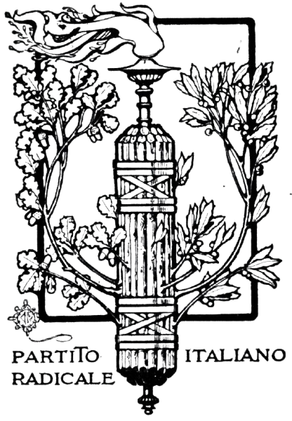
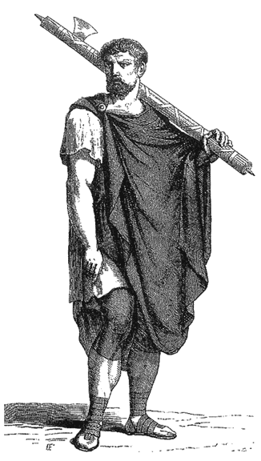
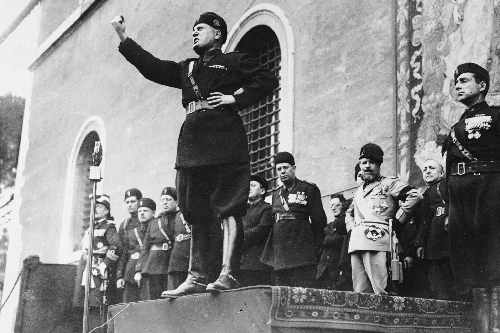
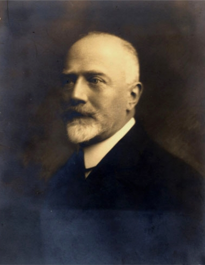
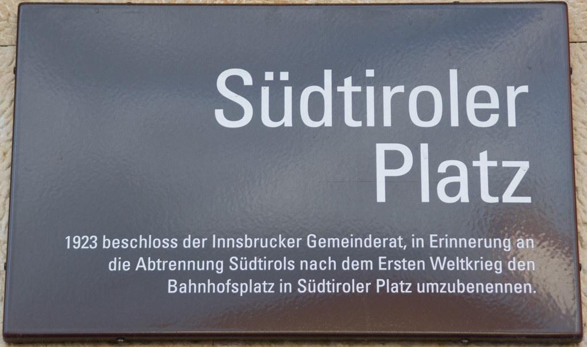
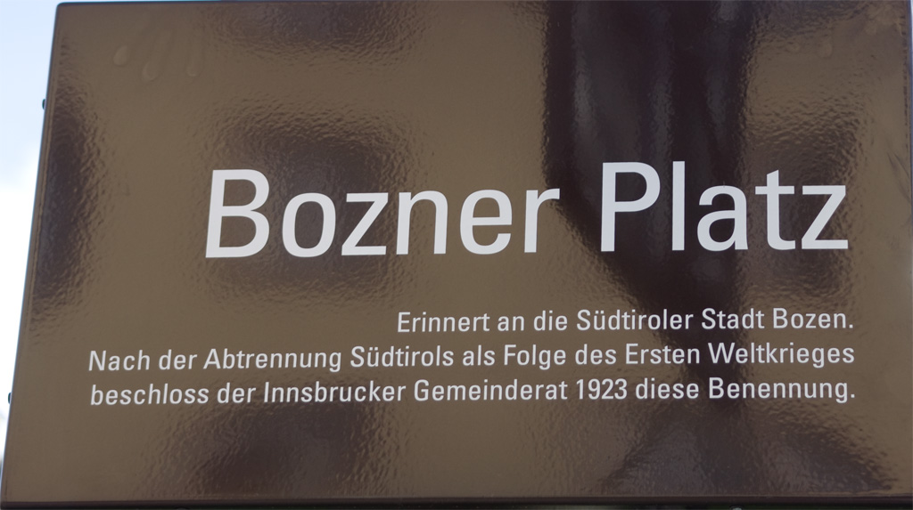
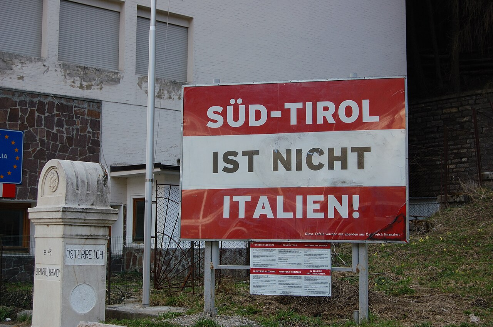
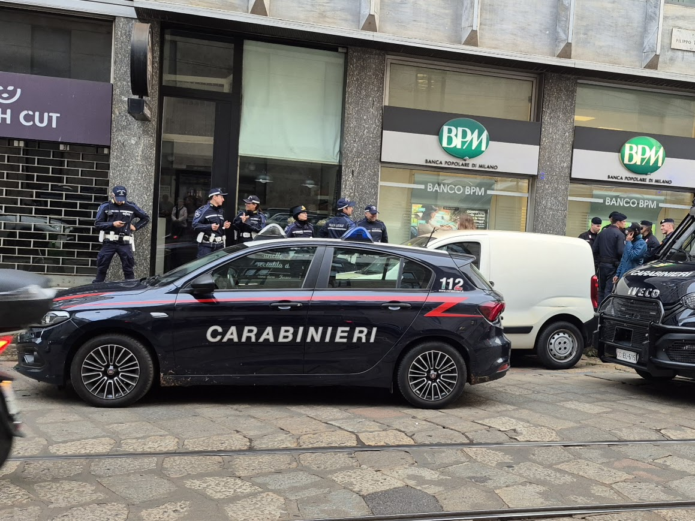
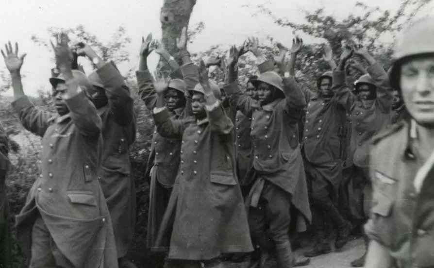

남티롤(Südtirol) 이야기 (4) - 창씨개명과 수탈
게시: 2026-06-11T06:30:30+09:00
1919년 남티롤이 이탈리아로 정식 병합되었을 때, 남티롤 주민들은 크게 상심하였으나 그렇다고 이탈리아의 통치를 피해 오스트리아로 넘어갈 생각은 감히 하지 못했습니다. 일부 자산가들이야 그럴 수 있을지 모르겠으나, 대부분의 주민들은 고향에 땅과 집, 사업장을 가지고 있었으므로 그걸 처분하고 넘어갈 수 없었기 때문입니다. 그에 더해, 당시 오스트리아는 상황이 더 엉망이었습니다. 패전국인 오스트리아-헝가리 제국은 이제 완전히 무너져 합스부르크 황실도 폐위되었고, 완전히 찌그러진 오스트리아는 엄청난 경제적 어려움과 정치적 혼란을 겪고 있었습니다. 따라서 차라리 당장은 승전국 이탈리아 쪽에 붙게 된 것이 오히려 다행이라고 여겨질 정도였습니다. 거기에 더해, 당시 이탈리아에서 집권하고 있던 니티(Francesco Saverio Nitti) 총리와 이탈리아 급진당(Partito Radicale Italiano)은 온건 좌파 정당으로서, 남티롤 주민들에게 그들의 독일계 문화적 정체성을 존중하겠다는 입장을 가지고 있었습니다.

(이탈리아 급진당의 로고입니다. 이 정당의 이탈리아어 이름은 Partito Radicale Italiano로서, 저기서 라디칼레라는 것은 영어로 Radical, 진짜 급진과격이라는 뜻입니다. 현대적으로 보면 어감이 굉장히 좋지 않지만, 당시엔 꼭 그런 어감은 아니었고 신속히 개혁하자는 의미였다고 하네요. 이 정당은 원래 급진 좌파 정당의 뒤를 이어 생겨난 것으로서, 이름과는 달리 정치적으로는 온건 좌파였다고 합니다. 온건파는 급진파에게 밀려나는 법이라서, 이들은 결국 무쏠리니의 파시스트당에 밀려났습니다.)

(이탈리아 급진당의 로고에 나오는 저 막대기 뭉치는 파스케스(fasces)라는 것으로서, 로마제국에서 집정관(Consul)이나 법무관(Praetor) 같은 고위 정무관의 권위의 상징입니다. 저 파스케스는 막대기를 뭉쳐 묶은 것인데, 저 막대기는 체벌할 권리를, 도끼는 처형할 권리를 뜻하는 것입니다. 막대기의 개수도 권위에 따라 딸라서, 집정권은 12개, 독재관이나 황제는 24개를 묶어 만들었습니다. 저걸 들고 다니는 호위를 릭토르(Lictor)라고 부릅니다.)

(무솔리니도 극우파 감성으로 고대 로마제국의 영광을 재현한다면서 권좌에 올랐지요.) 하지만 1922년 무솔리니의 파시스트당이 집권하면서 상황이 급변했습니다. 에토레 톨로메이(Ettore Tolomei)가 주도한 강력한 이탈리아화(Italianization) 정책이 시행된 것입니다. 에토레 톨로메이는 교육자 출신의 극렬 민족주의자이자 파시스트였는데, 당시엔 남티롤의 주도인 보첸(Bozen, 지금의 Bolzano)에서 문화 담당 공무원으로 일하고 있었습니다. 톨로메이는 무솔리니가 집권하자 1922년 10월 일단의 검은 셔츠단 파시스트들을 이끌고 완력으로 보첸 시청을 점거한 뒤, 이탈리아에서 파견된 정무관을 설득하여 독일인 시장을 해임하는 방식으로 그 일대 도시들을 장악했습니다. 이어서 1923년에는 '알토 아디제(Alto Adige, 남티롤 지방을 가리키는 이탈리아식 신조어) 지역에 대한 조치' (Provvedimenti per l'Alto Adige)에 기반하여 남티롤의 이탈리아화를 강행했습니다. 그 내용은 대략 다음과 같았습니다. - 지방 자치제 박탈 : 행정 구역이 이탈리아식으로 재편되고 로마에서 파견된 관료들이 행정을 독점 - 문화, 언어 탄압 : 학교에서의 독일어 교육 금지, 이탈리아어만을 공식 언어로 채택, 독일식 지명을 이탈리아식으로 변경 - 세제 개편 : 오스트리아식보다 더 복잡하고 더 높은 이탈리아 세율을 적용 - 결사의 자유 박탈 : 독일계 신문과 독일계 민간 조직, 가령 독일 협회(Deutscher Verband)의 해산 - 자산 수탈 : 독일계 지역 은행을 강제 흡수하여 이탈리아계 은행으로 통합하고, 독일계 주민들에 대한 대출을 회수함으로써 파산을 유도. 그런 식으로 독일계 주민들의 토지와 자산들을 헐값에 매입 - 이탈리아 주민들 이식 : 이탈리아계 주민들을 대거 이주시키고, 그들에게는 위의 방법으로 매입한 토지와 자산을 저가에 매각 마치 일제시대 일본이 조선을 수탈하던 것과 매우 비슷한 방식이었습니다. 특히 언어에 대한 부분이 심각했습니다. 일반 행정뿐만 아니라 재판에서도 이탈리아어만을 사용할 수 있었으므로, 당시 90%를 훌쩍 넘겼던 독일계 주민들로서는 너무나 불리할 수밖에 없었습니다. 그리고 티롤(Tirol)이라는 지방명 자체를 절대 쓰지 못하게 금지하고, 그 대신 과거에는 존재하지 않았던 신조어인 알토 아디제(Alto Adige, 아디제강 상류지역이라는 뜻)라는 이름을 쓰게 했습니다. 마찬가지로 남티롤의 주도이던 보첸(Bozen)은 볼차노(Bolzano)가 되었습니다. 지명뿐만 아니라, 사람들의 이름도 모두 이탈리아식으로 개명하게 했습니다. 가령 요한(Johann)은 하루 아침에 죠반니(Giovanni), 프리드리히(Friedrich)는 페데리코(Federico)가 되어야 했습니다. 이건 심하다 싶은 부분은 이미 죽어 무덤에 묻힌 사람들의 묘비에 적힌 이름까지 이탈리아식 이름으로 바꾸게 했다는 것입니다.

(에토레 톨로메이입니다. 남티롤 사람들에게는 아직도 "Totengräber Südtirols"(토텐그레버 쥐트티롤스, 남티롤의 무덤 파는 놈)으로 불린다고 합니다. 그는 1943년 이탈리아가 연합군에게 항복하면서 연합군편으로 돌아설 때, 이탈리아를 침공한 독일군에 의해 포로로 잡혀 독일로 끌려가 수용소 포로 신세가 되었습니다. 평생 독일인들에 대한 반감에 사로잡혀 있던 그로서는 다시 독일인들에게 포로가 되는 치욕이 참을 수 없었겠습니다만, 전화위복이 되어 전후에도 무솔리니의 협력자임에도 불구하고 전범 취급은 받지 않게 되었습니다. 지금도 그는 이탈리아의 영토를 넓힌 민족주의자 정도로 평가된다고 합니다. 그는 천수를 누리고 1952년에 죽었는데, 그의 유언장에 따르면, 톨로메이는 "남티롤의 마지막 독일계 주민이 브레너 고개(Brenner Pass) 너머로 쫓겨나는 모습을 보기 위해" 얼굴을 북쪽으로 향한 채 묻히기를 원했습니다. 참... 뭐라고 해야할지 모르겠습니다.)

(오스트리아 인스부르크에 있는 '남티롤 광장'(Südtiroler Platz) 명패입니다. 아래 설명문을 번역하면 "1923년 인스브루크 시의회는 제1차 세계대전 이후 남티롤이 분리단절된 것을 기억하기 위해, 기존의 '역전 광장(Bahnhofsplatz)'을 '남티롤 광장(Südtiroler Platz)'으로 개칭하기로 결정했다" 입니다.)

(역시 인스부르크에 있는 '보첸 광장'(Bozner Platz)입니다. 아래 설명문을 번역하면 "남티롤의 도시 보첸(Bozen)을 기념하기 위해, WW1의 결과로 남티롤이 분리된 후 인스부르크 시의회는 1923년에 이 명칭을 결정" 입니다. 이미 말씀드렸다시피, 1923년 이후로 보첸은 볼차노(Bolzano)가 되었습니다.)

("남티롤은 이탈리아가 아니다"라는 항의 간판입니다. 전에 언급한 남티롤과 북티롤의 국경선 중 북티롤 쪽에 놓인 간판입니다. ITALIEN! 이라는 글자 아래에 있는 작은 문자는 '이 표지판들은 오스트리아에서 보내온 기부금으로 제작되었다'라는 알림입니다. 이 간판은 2009년에 철거되었다고 합니다.) 이런 조치는 당연히 남티롤 주민들의 강력한 반발을 야기했습니다. 하지만 딱히 방법이 없었습니다. 상대가 파시스트잖아요. 극우 파시스트에게 인권이 어디있어요? 이탈리아 파시스트 정부는 헌병대(Carabinieri)를 동원하여 남티롤의 독일계 주민들을 강력하게 억압했습니다. 이탈리아 본국에서도 여론은 파시스트편이었습니다. 당시만 해도 이탈리아는 오스트리아의 독일어 쓰는 인간들에 의해 오랫동안 고통받다 이제 막 독립한 신생국 느낌이 강했으므로, 상황이 뒤집혀 독일어 쓰는 주민들을 강압적으로 통치하는 것에 대해 '독일인들의 인권도 중요하다'라는 목소리를 낼 분위기가 전혀 아니었습니다. 그런 상황 속에서 남티롤 사람들은 비밀리에 지하실이나 숲속에서 아이들에게 독일어와 독일 역사를 가르치는 '지하 학교'(카타콤베 학교, Katakombenschulen)를 운영하는 소극적 저항을 하는 수밖에 없었습니다. 소극적 저항이라고 해도, 이건 발각될 경우 투옥되는 범죄였습니다.

(카라비녜리(Carabinieri)를 저는 헌병대라고 번역했지만, 사실 우리가 아는 헌병과는 또 다릅니다. 이탈리아의 경찰은 독특하게도 크게 3개 조직으로 나누어져 있는데, 내무부 소속의 일반 경찰인 Polizia di Stato, 그리고 국방부 소속의 Carabinieri와 Guardia di Finanza입니다. 카라비녜리는 이름만 보면 기병총으로 무장한 기병을 뜻하는데 예전부터 경찰 역할도 수행했으며, 현대 이탈리아에서도 군인을 수사하는 헌병대 역할뿐만 아니라 민간인도 체포, 수사하는 일반 경찰 역할도 수행합니다. 주로 비도시 지역에서 그렇게 민간 경찰 업무도 수행한다고 하는데, 전에 밀라노에서 보니까 거리 한쪽에는 한 그룹의 폴리찌아가, 다른 쪽에는 또 한 그룹의 카라비녜리가 웅성거리고 서있더군요. 좀 겹치는 경우도 있나 봐요. 이 사진은 그때 찍은 사진입니다.) 그렇게 이탈리아의 보복성 강압 통치에 신음하던 남티롤 사람들에게는 뭔가 희망이 보이는 일이 생겼습니다. 바로 1930년대 히틀러와 나찌의 부상이었습니다. 히틀러와 나찌는 논란의 여지가 없는 악당이자 인류 역사의 오점입니다만, 당시에는 독일 및 오스트리아뿐만 아니라 유럽과 미국의 백인 우월주의자들을 열광시킨 희망의 존재였습니다. 정말 한심하고 부끄러운 역사이지만, 혼란에 빠져있던 독일을 재정비했을 뿐만 아니라 게르만 민족이 지배민족이라는 인종주의를 내세운 나찌는 억압받던 남티롤 사람들에겐 그야말로 구세주 같은 존재였습니다. 남티롤 사람들은 오스트리아까지 합병한 나찌 독일이 곧 이탈리아놈들의 통치로부터 자신들을 구원해주리라 생각했던 것입니다.

(아마 19세기 중반 ~ 20세기 중반까지가 인류 역사상 백인 우월주의에 의한 인종차별이 가장 극심한 시기였을 것입니다. 사진은 1940년 프랑스에서 독일군의 포로가 된 서아프리카 흑인들로 구성된 프랑스군 병사들, 소위 말하는 세네갈 사수들(Senegalese Tirailleurs)입니다. 대략 2~3만 명의 흑인 프랑스군 병사들이 포로로 잡혔는데, 독일군은 항복하여 호송 중이던 이 병사들 1천~1천5백 정도를 아무렇게나 학살하기도 했습니다. 대부분의 프랑스군 포로들은 일단 독일로 압송된 것에 비해 나머지 흑인 병사들은 프랑스 현지에 수용소를 짓고 거기에 수용했는데, 이는 혹시라도 독일에 이들을 후송했다가 독일 여자들과 혼혈이라도 생길 것을 염려해서였습니다. 어이 없는 부분은 종전 후에도 저런 흑인 포로들의 무차별 학살에 대해서는 연합군도 관심이 없어서 독일군 누구도 그 학살에 대해 기소되지 않았다는 점입니다. 더 어이 없는 부분은 그나마 살아남아 해방된 흑인 포로들을 프랑스군도 홀대했을 뿐만 아니라, 밀린 급료와 수당을 요구하며 고향으로 돌아가기를 거부하는 흑인 병사들을 1944년 12월 1일 새벽에 프랑스군이 기습하여 최소 수십, 일설에 따르면 3백여 명을 학살했다는 것입니다. 이 사건은 티아루아 학살(Thiaroye massacre)이라고 기록되는데, 철저한 무관심 속에서 별로 알려져 있지 않습니다.) 하지만 그런 생각은 순박하고도 멍청한 것이었습니다. 이탈리아 파시스트 민족주의와 독일 나찌 민족주의가 충돌하면 어떤 결과를 냈을까요? 거기에 대해서는 히틀러의 '나의 투쟁'(Mein Kampf)에 일부 힌트가 이미 주어져 있었습니다. 아래는 '나의 투쟁' 제2권에 나오는 구절입니다. "하지만 나는 이제 주사위가 던져진 이상, 전쟁을 통해 남티롤을 다시 탈환하는 것을 불가능하다고 생각할 뿐만 아니라, 설령 그것이 가능하다 할지라도 나 개인적으로는 거부할 것임을 선언하는 데 주저하지 않는다. 왜냐하면 이 문제를 해결하기 위해 승리의 전제가 될 수 있을 만큼 전체 독일 국민의 민족적 열정의 불꽃을 불러일으키는 것은 불가능하다는 확신이 있기 때문이다." 히틀러는 미친 놈이었지만, 매우 현실적인 미친 놈이었습니다. 그는 이미 프랑스를 치고 유럽을 지배하기 위해서는 무솔리니의 이탈리아를 아군으로 끌어들이는 동맹이 필수적이라고 판단하고 있었습니다. 그래서 나온 결과가 무엇이었을까요?